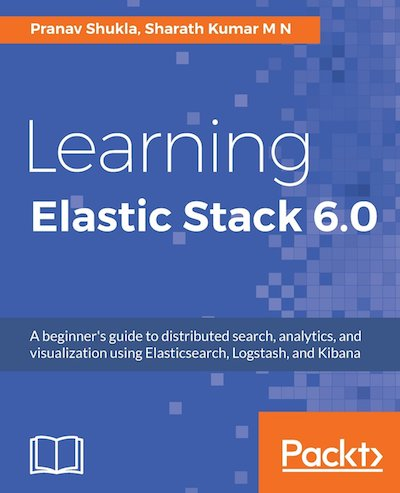

Releasing Soon! Learning Elastic Stack 6.0
The book Learning Elastic Stack 6.0 is available for pre-order. Here is what to expect from the book.
Elasticsearch has been at the forefront of the big data movement. Since its initial release in 2010, it has slowly but steadily evolved into a robust big data store. The rich ecosystem of components around Elasticsearch - Logstash, Kibana, Beats, X-Pack is known as the Elastic Stack. Recently, the Elastic Stack 6.0 version was released.
I have been working as a co-author on the book Learning Elastic Stack 6.0 with Packt Publishing along with Sharath Kumar M N. After nearly one year of writing, the book is ready and is available for pre-order online.

This book will initially introduce you to the Elastic Stack followed by showing you how to set up the stack by installing the tools, basic configurations, and building a basic data pipeline. This book covers ElasticSearch for distributed searching and analytics along with Logstash for logging and Kibana for visualization. It also demonstrates custom plugin creation in Kibana and Beats. It further teaches you about Elastic X – pack, which are extensions developed & maintained by Elastic Stack developers. We then move on to cover and teach you about Elastic Cloud. Towards the end you will also learn, how you can deploy the Elastic Stack in production environments.
On completing this book, you will have an in-depth knowledge of the implementation of Elastic Stack and have a solid understanding of the role of each component of the stack.

The book is available for ordering at Packt’s website on this link.
It is also available on Amazon UK, Amazon USA, Amazon India and other portals.
A parting thought -
"A writer only begins a book. A reader finishes it.” ― Samuel Johnson